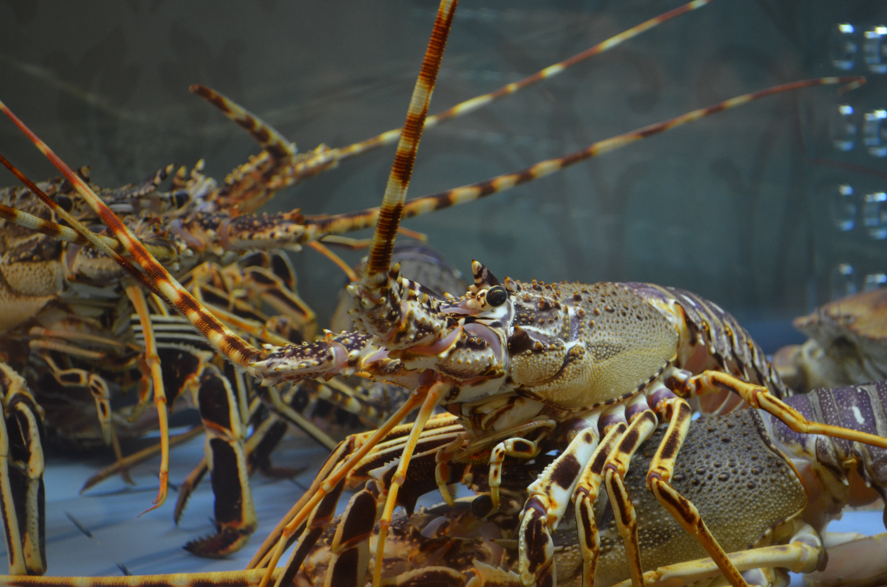
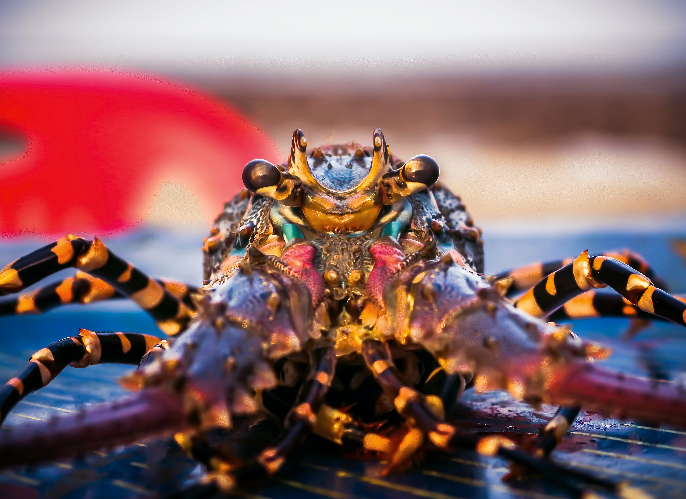
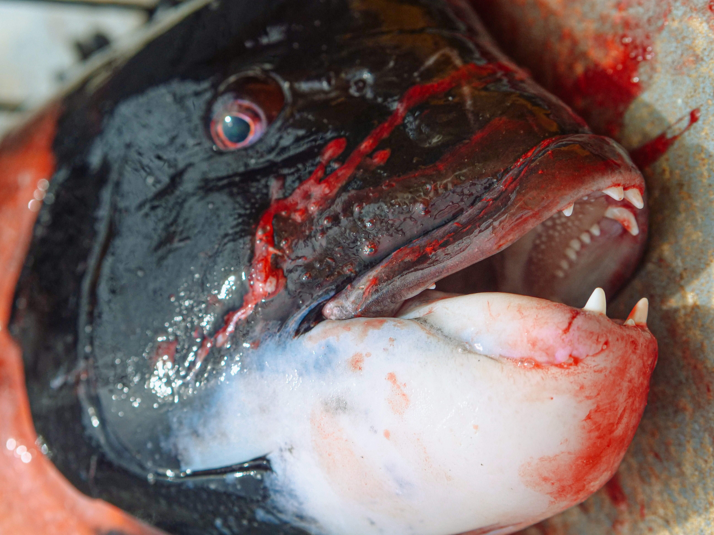

Facts you that will change the way you see our little friends.
Lobsters usually feed on bottom dwellers like clams, snails, and crabs. Sign up for free lobster facts every month.

If you think lobsters are not so cool...Let me tell you this:
Lobsters are known to be delicious.They are also rich in protein, omega-3 fatty acids, and minerals.

They may also become contaminated with disease-causing microorganisms or heavy metals.

Just try not to eat too often. There is a lot of fish in the sea.
What passengers were happy that the Titanic sank?
The lobsters in the kitchen.